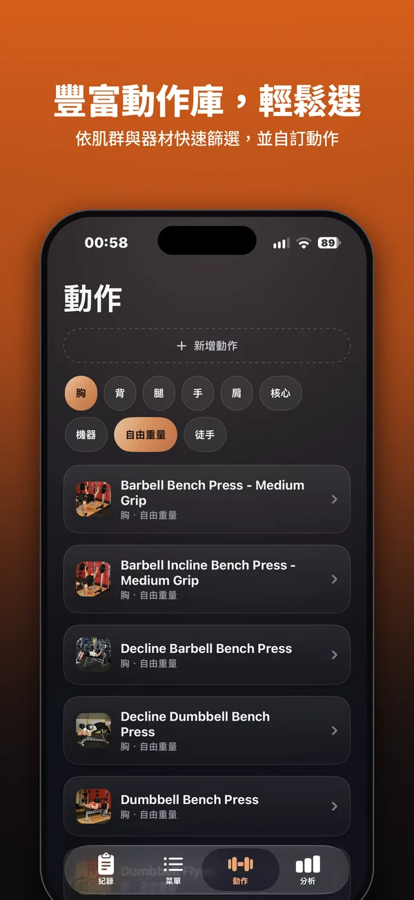
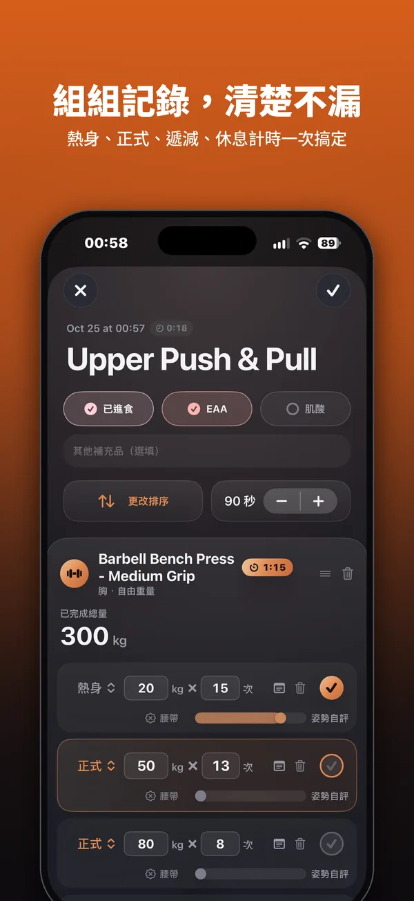
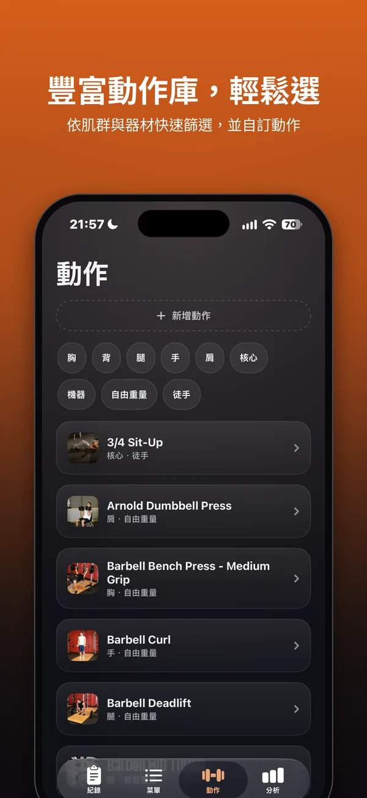
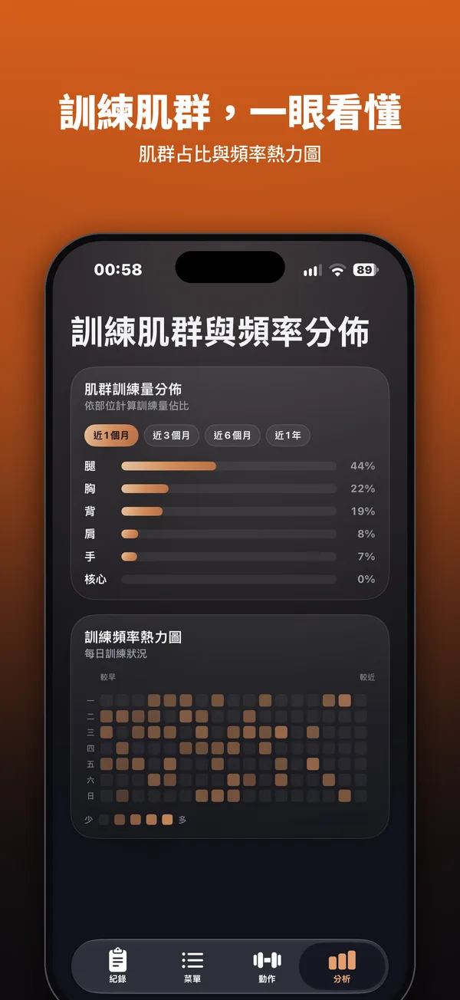

iOS 訓練紀錄 App
記錄每一組訓練，資料完整保存，由你掌控。
Gymoji 是一款 iOS 重量訓練紀錄 App，記錄動作、重量、次數與訓練時間。目前開放 TestFlight 測試。




你的資料，由你掌握
-
完整保存
你記錄的每一組訓練，連同菜單、自訂動作與設定，都完整保留，也能隨時備份。
-
不分享給第三方
開發者無法存取你的資料。沒有廣告，也沒有使用任何數據分析（Analytics）服務。
-
還原前先保留一份
從備份檔還原前，Gymoji 會自動在你的裝置上另存目前的資料。你可以在「檔案」App 的「我的 iPhone › Gymoji」資料夾查看或刪除。
備份與匯入
四種方式保存或帶入你的資料。備份與匯出的檔案存放在你選擇的位置或你自己的 iCloud，不會經過開發者的伺服器。
-
離線完整備份與還原
在手機上匯出完整備份檔，包含訓練紀錄、菜單、自訂動作（含照片）與設定。換手機或重裝 App 後，可以完整還原。
-
iCloud 線上完整備份與還原
把完整備份存到你自己的 iCloud，需要時再從 iCloud 還原。
-
訓練紀錄 CSV 匯入匯出
只包含訓練紀錄，可以用試算表開啟，也能匯入回 Gymoji。
-
從 Strong 匯入訓練紀錄
把你在 Strong 的訓練紀錄匯入 Gymoji。
支援與回報
使用上有任何問題、錯誤回報或建議，歡迎來信。
hegwanlin@gmail.com